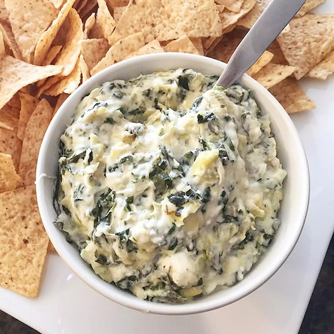

Hot Spinach Artichoke Dip

Description
This spinach artichoke dip is delicious. It's so cheesy and fragrant. If you don't like artichokes, don't worry — you'll never know they're in there! My only question is: Is it okay to eat it with a spoon right out of the dish?
Ingredients
- Cream cheese: this satisfying spinach artichoke dip starts with a block of cream cheese
- Mayonnaise: mayonnaise lends creaminess and a welcome tangy flavor
- Cheeses: you'll need grated Parmesan, grated Romano, and shredded mozzarella
- Garlic: a clove of minced garlic takes the flavor up a notch
- Spices and seasonings: the spinach artichoke dip is seasoned with dried basil, garlic salt, salt, and pepper
- Artichoke hearts: drain and chop one can of artichoke hearts
- Spinach: thawed and drained frozen spinach is perfect for this easy recipe
Steps
- Mix all the ingredients (except for the mozzarella) together
- Transfer the mixture to a prepared baking dish. Top with cheese
- Bake the spinach artichoke dip in the preheated oven until bubbly
Home